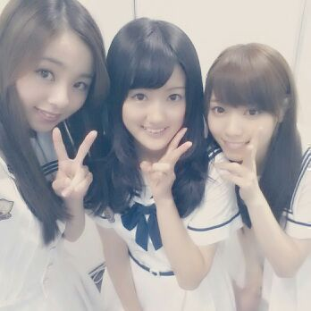
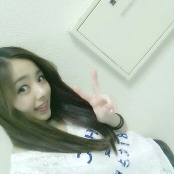
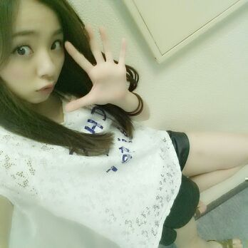

皆さーーーん＼(^o^)／
こんばんわぁー ♪
今日は 握手会 in京都 でしたー ！！
ペアは 抽選会で最後まで残った３人！

Rotty ひなちま なぁせ ☆
今日は １日本当にありがとう\(^ω^)/
まひろ、ひな、ななせのfamilyさん
み〜んなっ、
心 優しい方しかいなくて
本と〜〜っうに 楽しかったです //
「大丈夫か？」
「疲れてないか？」
「水飲みーや？」
だとか 心配してくれるの*
ありがとうね ...(´ω`)
今日は 皆さんからパワーをもらったので
またその分、
皆さんに何か恩返ししなくっちゃぁぁ♪
握手会が終わった後の写メだよん(*´∨`)
チョキ

パー
パー(口は グーってゆうとるよ♪)

あ〜 こんな時間だっ//
また blog更新すんねっ ヾ(´∨`)/
さっ、明日は久しぶりのOFF。
あはん ))
なっにしようかなーー？
** * ** * **
皆さんのこと やっぱ
大好き...
おやすみなさい(〃ω〃)のし